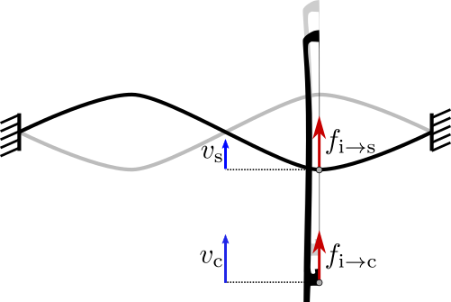

Slideshow of a presentation given at the second NOnlinear DYnamics CONference (NODYCON 2021) on a joint work with David Roze (STMS laboratory, UMR 9912 CNRS IRCAM UPMC) about a Generic passive-guaranteed structure for elastoplatic friction models.
